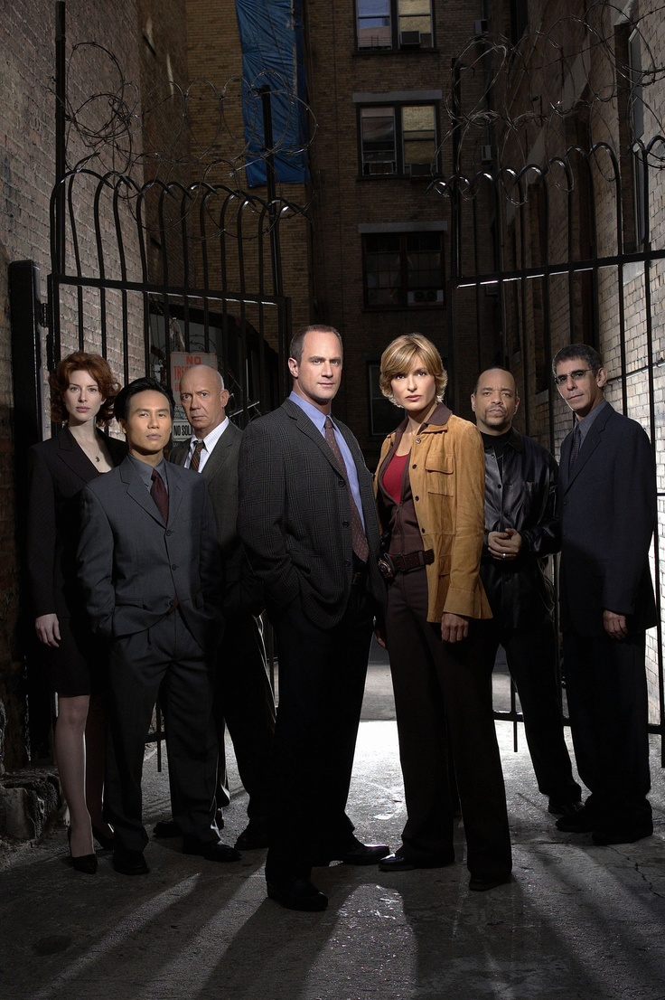
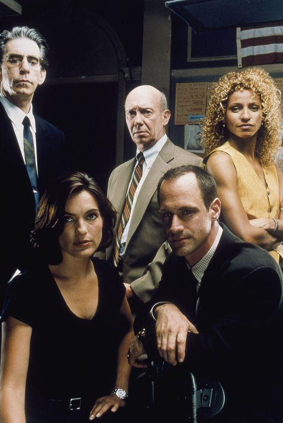
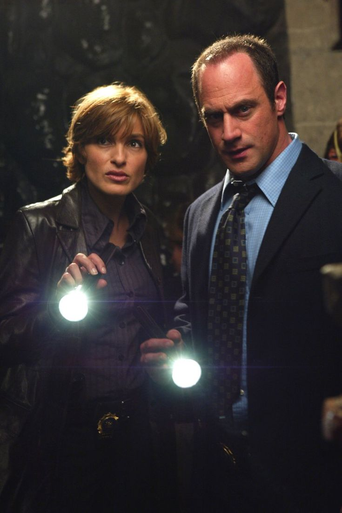

Galeria de imagens
Abaixo estão algumas imagens da série que mostram momentos importantes, personagens marcantes e a atmosfera intensa de Law & Order: SVU.



Vídeo do YouTube
O vídeo abaixo apresenta cenas e momentos marcantes da série, destacando a importância de Olivia Benson ao longo das temporadas.
Caso queira assistir diretamente no YouTube, acesse: Assistir no YouTube
Curiosidades
Law & Order: SVU é conhecida por abordar casos intensos e muitas vezes inspirados em acontecimentos reais. A série se destaca por tratar temas sensíveis com profundidade e responsabilidade.
Olivia Benson, ao longo das temporadas, se tornou uma das personagens mais icônicas da televisão, sendo lembrada por sua força, empatia e capacidade de enfrentar situações extremamente difíceis.
A parceria entre Olivia Benson e Elliot Stabler também é um dos pontos mais marcantes da série, sendo muito valorizada pelos fãs.